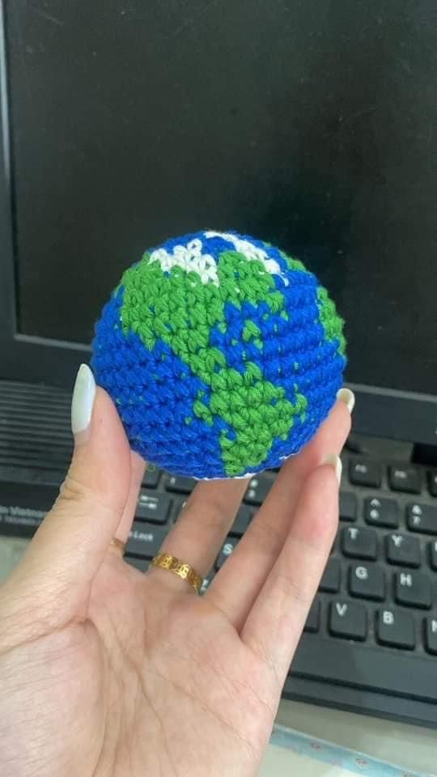
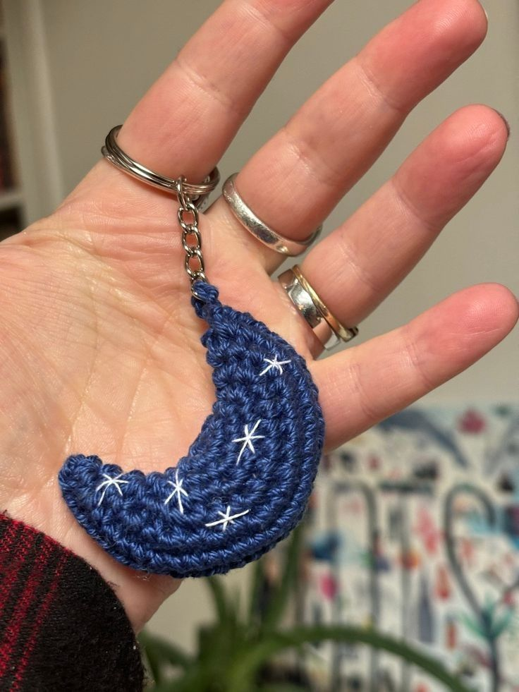
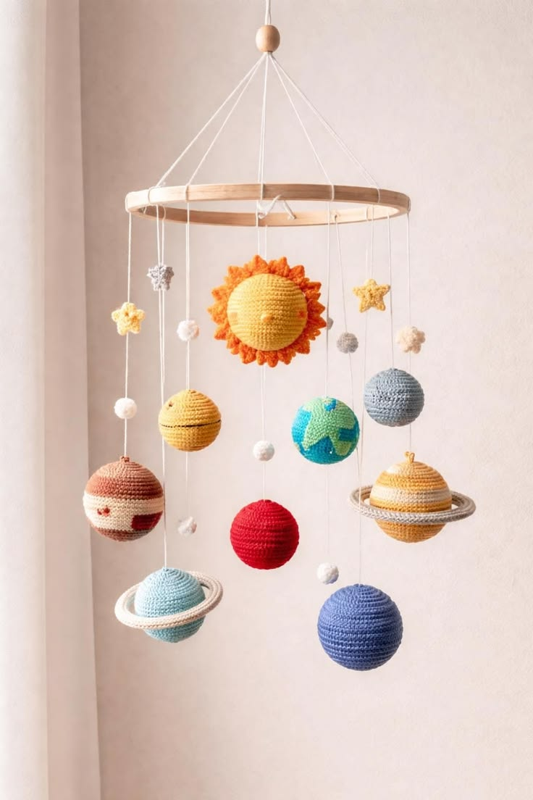
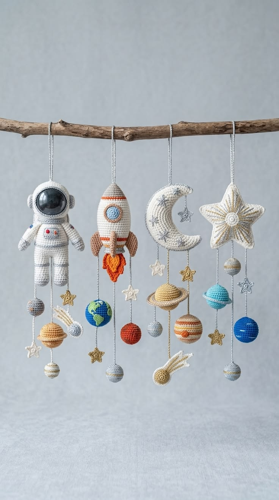
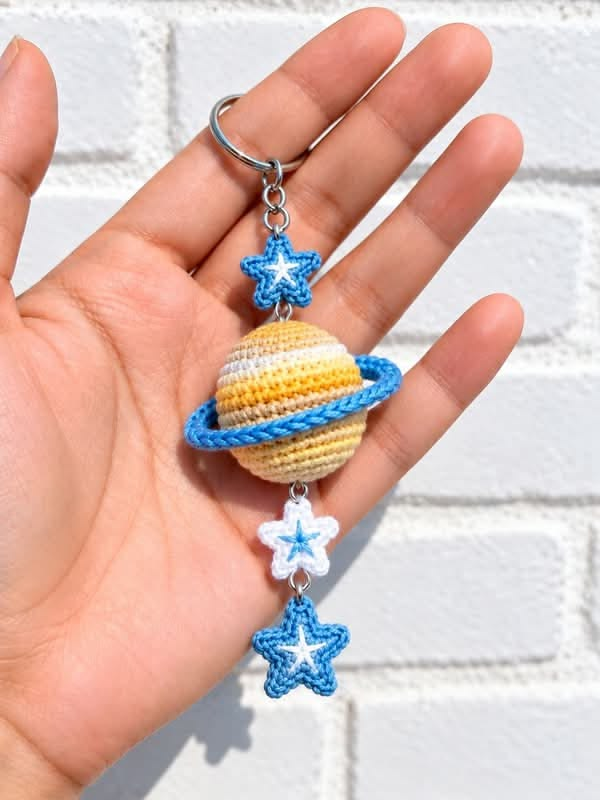

Handmade crochet
A colourful piece, made stitch by stitch.
Colourful crochet treasures, thoughtfully made by hand. Every stitch tells a little story.
Explore the collection ↗A glimpse of what we love to make. Every piece is handmade with care.

A colourful piece, made stitch by stitch.

Little handmade charms to carry along.

A playful mobile inspired by the planets.

Textured crochet art for a cosy home.

A one-of-a-kind handmade design.
Handmade by Luísa Rebelo is a celebration of the joy of making things by hand. Each creation is crafted with patience, care, and a love for colour and texture.
We'll share Luísa's own story and photographs here soon.
Interested in a handmade creation or a custom order? Contact details will be added here soon.